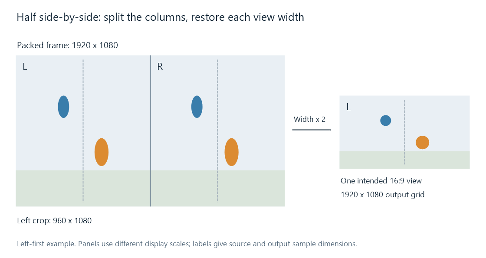

Side-by-Side 3D Video
Side-by-side 3D places the two eye views in adjacent horizontal regions of one video frame.

Left-first example: a 1920 × 1080 packed frame holds two 960 × 1080 regions. The pictured output expands one region into a 1920 × 1080 grid. Diagram panels use different inspection scales.
Side-by-side, or SBS, stores the two views next to each other inside a conventional frame. An ordinary decoder can recover that combined raster. Stereoscopic presentation then extracts its left and right regions and assigns them to the intended eyes.
This explains an Emby playback result that shows two narrow pictures beside each other: the packed image has been decoded, while the view-unpacking and stereoscopic presentation have not been applied on that route.
Half width and full width
For a target view shape of 1920 × 1080 square pixels:
| Layout | Combined coded frame | Stored region for each eye |
|---|---|---|
| Half SBS | 1920 × 1080 | 960 × 1080 |
| Full SBS | 3840 × 1080 | 1920 × 1080 |
Half SBS retains the usual overall frame dimensions by giving each view half the horizontal sample count. Its region is 8:9 as a raw square-pixel rectangle; presenting that region as the intended 16:9 view expands the width by two.
The reconstruction uses video scaling or an equivalent display mapping to produce the required output positions. The scene's intended shape is restored, while its horizontal detail still originates from the 960 stored columns. Full SBS instead supplies 1920 stored columns for each eye.
The combined luma counts are 2,073,600 for half SBS and 4,147,200 for full SBS in these examples. Compressed size also depends on coding and content; those numbers describe the picture grids.
Extracting the correct columns
For a packed frame of even width W and height H, the first region uses columns 0 through W/2−1. The second uses W/2 through W−1. Each covers all H rows.
For the 1920-wide example, the regions are 0–959 and 960–1919. Extracting the first region gives a 960 × 1080 image. Correct shape reconstruction is a further operation; copying that crop to a square-pixel output without the intended mapping produces a narrow picture.
Left-first storage associates the first region with the left eye. Right-first storage reverses that association. Swapping the eye assignments changes the stereo disparity sign, even though the same two regions remain present.
The Matroska registry distinguishes left-first SBS with StereoMode 1 and right-first SBS with 11. Its specification also separates the combined raw pixel dimensions from the display dimensions of one view: a full SBS track can have PixelWidth 3840 and per-view DisplayWidth 1920. Those fields describe compatible parts of one representation.
Preserving or converting the arrangement
A compatible stream copy can retain the encoded packed picture. Repackaging also needs the relevant stereo interpretation retained in the destination's description. Emby's 3D naming documentation covers the library identifiers for half and full SBS; the file's region order and view geometry still establish what the renderer should do.
A converter can unpack both views, process them, and encode another stereo arrangement. It can also select one region to make a 2D version. For half SBS, that selected view needs its intended display shape handled as part of the conversion.
If a half-SBS combined frame is reduced to 1280 × 720 while preserving its layout, its two regions become 640 × 720. Their intended 16:9 presentation can expand each to 1280 × 720. Accounting for both the combined width and the per-view width makes the retained horizontal sample count clear.